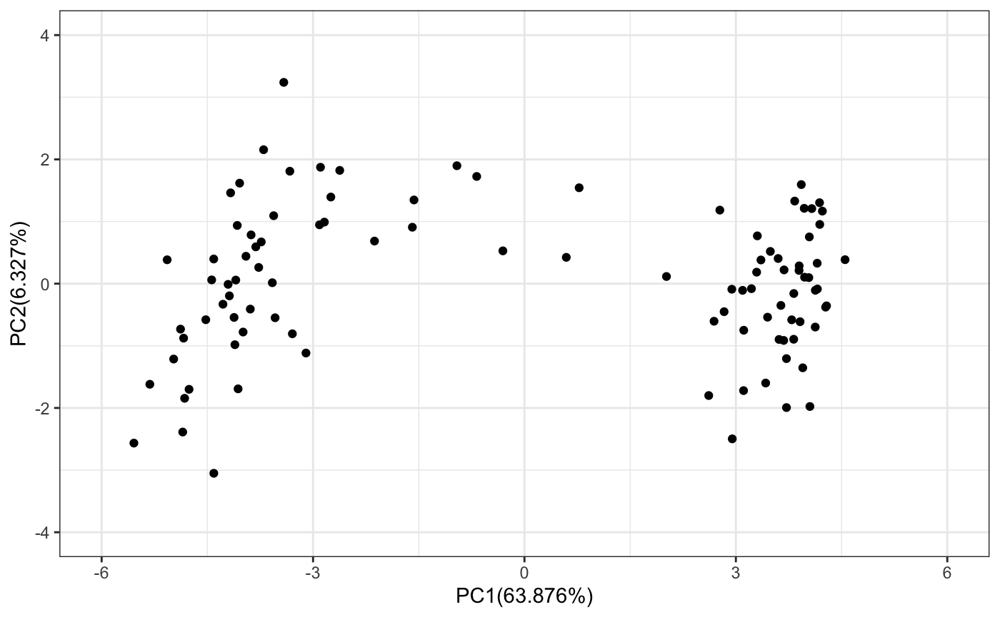
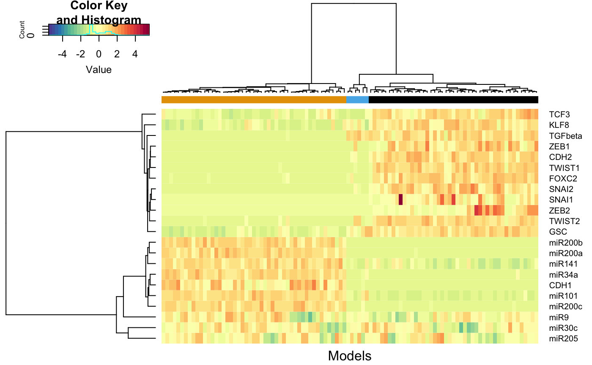
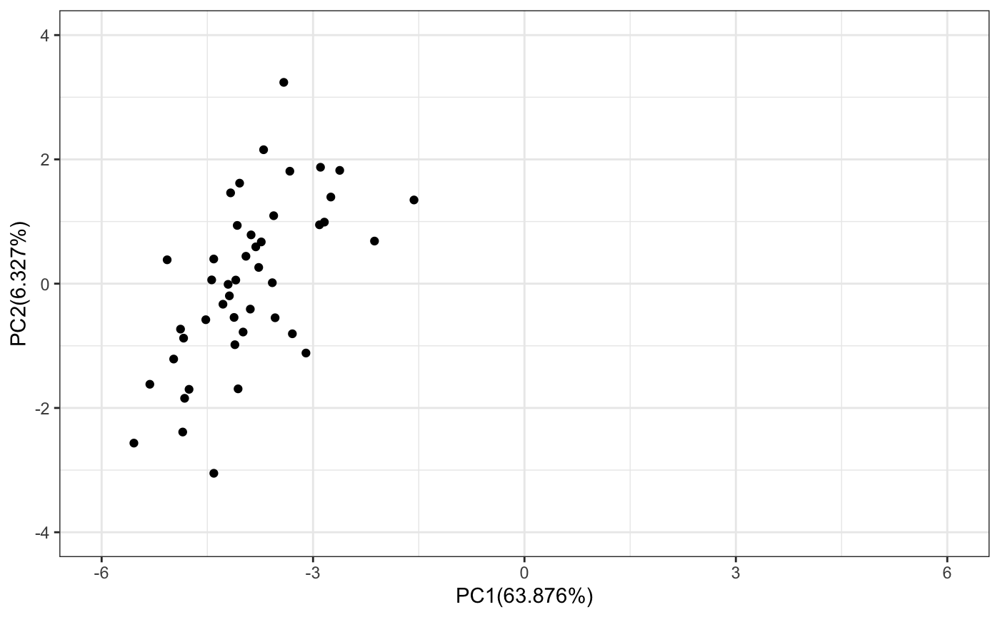
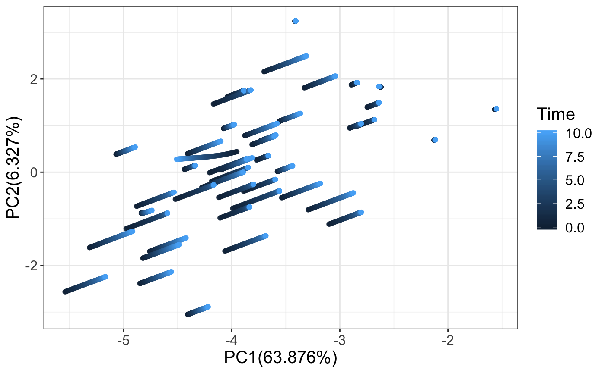
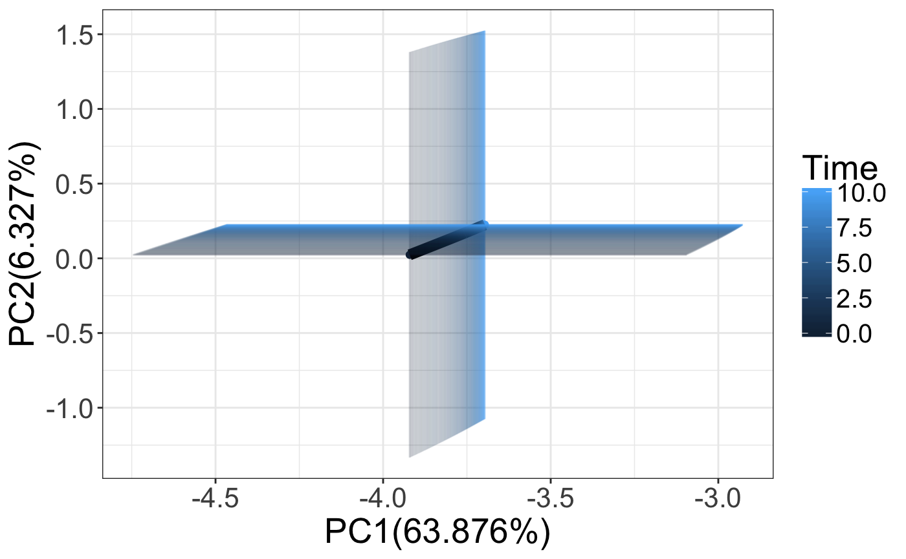

vignettes/articles/simulatingTrajectories.Rmd
simulatingTrajectories.RmdTypically we use sRACIPE to simulate the steady state solutions but one can also simulate the trajectories to study the effect of perturbations on the clusters. Here we will show a pipeline to study the effect of perturbations on the clusters.
# Load sRACIPE package
suppressWarnings(suppressPackageStartupMessages(library(sRACIPE)))
set.seed(123)
racipe <- RacipeSE() # Construct an empty RacipeSE object
data("EMT2") # Load a sample circuit
sracipeCircuit(racipe) <- EMT2## circuit file successfully loaded# Simulate the circuit
racipe <- sracipeSimulate(racipe, numModels = 100, plots = FALSE, genIC = TRUE,
genParams = TRUE, integrate = TRUE,
integrateStepSize = 0.05,
simulationTime = 50
)## Generating gene thresholds## generating thresholds for uniform distribution1...## Running the simulations## ========================================# Calculate the mean and sd from the unnormalized data.
# These will be later used to normalize any new data.
simExp <- assay(racipe)
simExp <- log2(1+simExp)
tmpMeans <- rowMeans(simExp)
tmpSds <- apply(simExp,1,sd)
# Normalize the data
racipeNorm <- sracipeNormalize(racipe)
simExp <- assay(racipeNorm) # extract the simulated gene expression
pca <- prcomp(t(simExp)) # Plot the simulated data on PCA
## Define a function to plot pca datapoints
# Load the ggplot2
suppressWarnings(suppressPackageStartupMessages(library(ggplot2)))
sracipePlotPcaPoints <- function(plotData, xmin=-2,xmax=2,ymin=-2,ymax=2){
pcaData <- data.frame(x=plotData[,1],y=plotData[,2])
require(ggplot2)
return(ggplot2::ggplot(pcaData) +
geom_point(aes(x = pcaData[,1], y =pcaData[,2])) +
xlab(paste0("PC1(",100*summary(pca)$importance[2,1],"%)")) +
ylab(paste0("PC2(",100*summary(pca)$importance[2,2],"%)")) +
xlim(xmin,xmax) +
ylim(ymin,ymax) +
theme_bw() +
NULL)
}
sracipePlotPcaPoints(pca$x,xmin=-6,xmax=6,ymin=-4,ymax=4)
Now we can cluster the models and perturb models belonging to that cluster.
# Define the distance function
distfun=function(x) as.dist((1-cor(t(x), method = "s"))/2)
distance <- distfun(t(simExp)) # Compute the distance
# Perform heirarchical clustering
clusters <- hclust(distance, method = "ward.D2" )
# Select the number of clusters
nClusters <- 3
# Obtain the cluster assignment of each model
assignedClusters <- cutree(clusters, nClusters)
# Define a function to plot the heirarchical clustering data
sracipePlotHeatmap <- function(plotData, assignedClusters, col = NULL,
col2 = NULL,
...) {
if(is.null(col)) col <- c("#5E4FA2", "#4F61AA", "#4173B3", "#3386BC", "#4198B6",
"#51ABAE", "#62BEA6", "#77C8A4", "#8ED1A4", "#A4DAA4",
"#B8E2A1", "#CBEA9D", "#DEF199", "#EAF69F", "#F2FAAC",
"#FAFDB8", "#FEFAB6", "#FEF0A5", "#FEE695", "#FDD985",
"#FDC978", "#FDB96A", "#FCA75E", "#F99254", "#F67D4A",
"#F26943", "#E85A47", "#DE4B4B", "#D33C4E", "#C1284A",
"#AF1446", "#9E0142")
if(is.null(col2)) col2 <- c("#000000", "#E69F00", "#56B4E9", "#009E73", "#F0E442", "#0072B2",
"#D55E00", "#CC79A7")
clustNames <- unique(assignedClusters)
nClusters <- length(clustNames)
clustColors <- numeric(length(assignedClusters))
for(tmp1 in seq_len(length(clustColors))){
clustColors[tmp1] <- which(clustNames == assignedClusters[tmp1] )
}
clustColors <- col2[clustColors]
names(clustColors) <- as.character(assignedClusters)
require(gplots)
gplots::heatmap.2(plotData,
col=col,
hclustfun = function(x) hclust(x,method = 'ward.D2'),
distfun=function(x) as.dist((1-cor(t(x), method = "s"))/2),
trace="none",
ColSideColors = clustColors, labCol = FALSE,
xlab="Models",
margins = c(2, 5)
)
}
# Plot the data
sracipePlotHeatmap(simExp, assignedClusters = assignedClusters)## Loading required package: gplots##
## Attaching package: 'gplots'## The following object is masked from 'package:IRanges':
##
## space## The following object is masked from 'package:S4Vectors':
##
## space## The following object is masked from 'package:stats':
##
## lowess
# Select the models belonging to first cluster
selectedModels <- which(assignedClusters ==1)
# Plot the selected models on PC plot
tmp <- pca$x[selectedModels,]
sracipePlotPcaPoints(plotData = tmp,xmin=-6,xmax=6,ymin=-4,ymax=4)
Now we select the models belonging to first cluster and decrease the ZEB1 production rate.
# Create a new racipe object with models from the selected cluster
subRacipe <- RacipeSE(racipe[,selectedModels])
subRacipe ## class: RacipeSE
## dim: 22 45
## metadata(4): annotation nInteractions config normalized
## assays(1): deterministic
## rownames(22): FOXC2 KLF8 ... CDH1 CDH2
## rowData names(22): FOXC2 KLF8 ... CDH1 CDH2
## colnames: NULL
## colData names(312): G_FOXC2 G_KLF8 ... CDH1 CDH2numModels <- dim(subRacipe)[2]
# modify the parameters
params <- sracipeParams(subRacipe)
params["G_ZEB1"] <- 0.01*params["G_ZEB1"]
sracipeParams(subRacipe) <- params
# Use the steady state solutions of the models as the initial conditin
ic <- assay(subRacipe,1)
sracipeIC(subRacipe) <- ic
# We will record the state at 0.05 intervals. For an integrateStepSize of 0.01,
# this implies that simulation results at every 5th time point are recorded.
subRacipeTS <- sracipeSimulate(subRacipe, numModels = numModels,
plots = FALSE, genIC = FALSE,
genParams = FALSE, integrate = TRUE,
integrateStepSize = 0.01,
simulationTime = 10, printInterval = 0.05, printStart = 0
)## Running the simulations## ====================# Lets define a function to process the time series data.
# We should process all data uniformly to observe how changing a parameter
# affects the trajectories of the cluster.
# Use the mean and standard deviation from the original simulation to normalize.
processData <- function(racipe,counter,time){
newExpData <- assay(racipe,counter) # data from different timepoints
newExpData <- log2(1+newExpData) # Log transform
newExpData <- sweep(newExpData, 1, tmpMeans, FUN = "-") # scale
newExpData <- sweep(newExpData, 1, tmpSds, FUN = "/") # scale
newPca <- (scale(t(newExpData), pca$center, pca$scale) %*%
pca$rotation)
return(data.frame(PC1=newPca[,1],PC2=newPca[,2], Time = time))
}
trajectoriesAll <- data.frame()
trajectoriesAll <- data.frame(processData(subRacipe,1,0))
models <- seq(1:numModels)
trajectoriesAll$Model <- models
nTimePoints <- length(assays(subRacipeTS))
for(i in 2:nTimePoints)
{
exp <- processData(subRacipeTS,i,(i-1)*0.05)
exp$Model <- models
trajectoriesAll <- rbind(trajectoriesAll,exp)
}
p <- ggplot2::ggplot(trajectoriesAll) +
xlab(paste0("PC1(",100*summary(pca)$importance[2,1],"%)")) +
ylab(paste0("PC2(",100*summary(pca)$importance[2,2],"%)")) +
geom_point(aes(x = PC1, y =PC2, color = Time), alpha = 0.5) +
# ggtitle(" Time = 2000") +
theme_bw() +
theme(text = element_text(size=15))
p
We can also observe how the mean and standard deviation of the models change upon parameter perturbation. The graph shown below shows how the PC1 and PC2 change over time.
pcaSimValues <- do.call(data.frame, aggregate(. ~ Time, trajectoriesAll[,1:3], function(x) c(mean = mean(x), sd = sd(x))))
p <- ggplot2::ggplot(pcaSimValues) +
geom_point(aes(x = PC1.mean, y =PC2.mean, color = Time), alpha = 1) +
geom_line(aes(x = PC1.mean, y =PC2.mean),size=3) +
geom_errorbar(aes(x = PC1.mean, color = Time,ymin = (PC2.mean - PC2.sd),ymax = (PC2.mean + PC2.sd)), alpha = 0.1) +
geom_errorbarh(aes( y =PC2.mean, color = Time,xmin = (PC1.mean - PC1.sd),xmax = (PC1.mean + PC1.sd)), alpha = 0.1) +
xlab(paste0("PC1(",100*summary(pca)$importance[2,1],"%)")) +
ylab(paste0("PC2(",100*summary(pca)$importance[2,2],"%)")) +
theme_bw() +
theme(text = element_text(size=20),
legend.text = element_text(size=15),
legend.spacing.y = unit(.10, 'cm'),
legend.spacing.x = unit(.10, 'cm')
)
p
One can also create a movie using gganimate.
library(gganimate)
library(transformr)
p <- ggplot2::ggplot(pcaSimValues[1:100,]) +
geom_point(aes(x = PC1.mean, y =PC2.mean, color = Time)) +
xlab(paste0("PC1(",100*summary(pca)$importance[2,1],"%)")) +
ylab(paste0("PC2(",100*summary(pca)$importance[2,2],"%)")) +
theme_bw() +
transition_states(
Time,
wrap=FALSE
) +
shadow_mark() +
enter_fade() +
exit_shrink() +
ease_aes('sine-in-out')
# NULL
animate(p, renderer = ffmpeg_renderer(),nframes = 199)